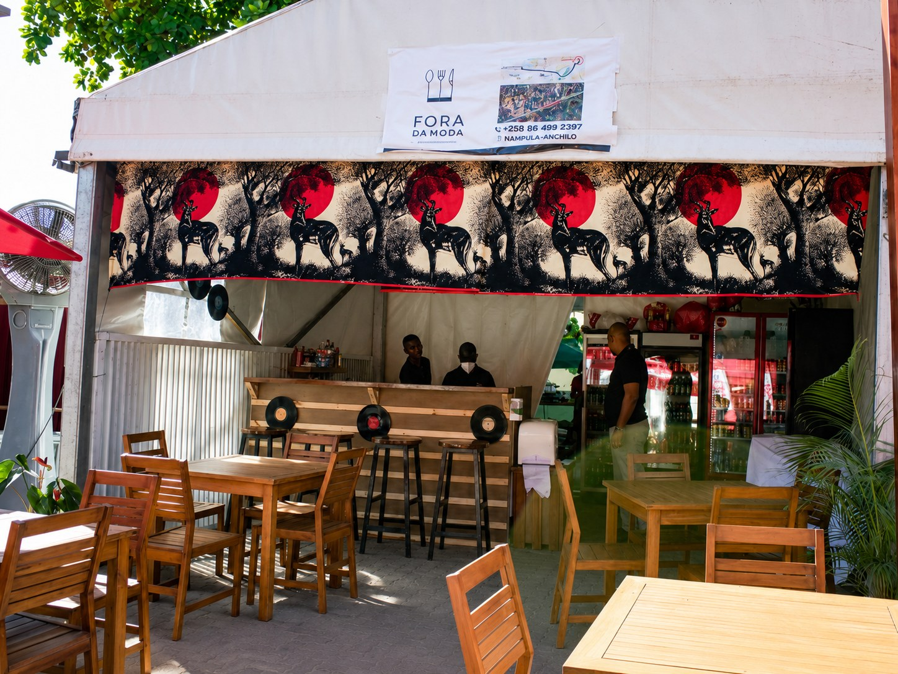
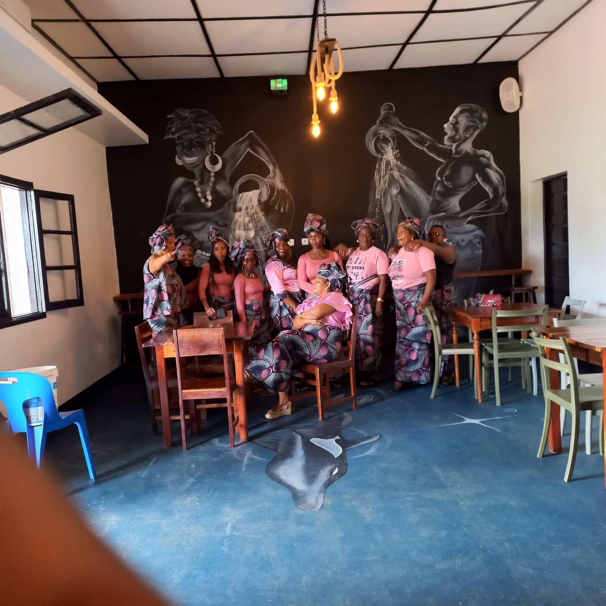
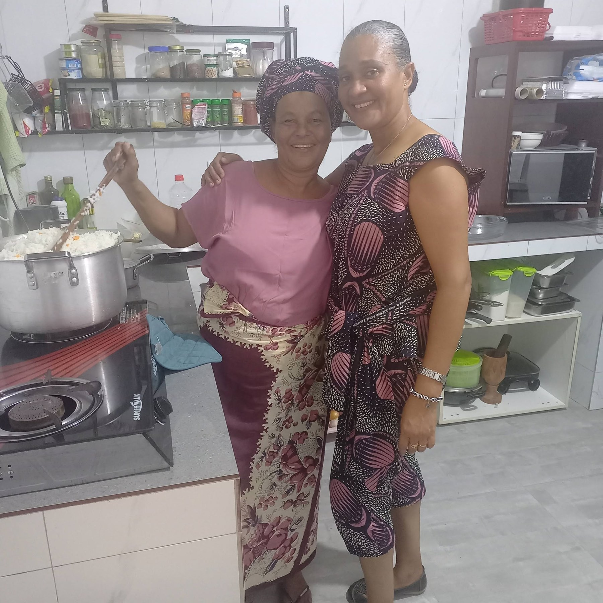

Restaurante Bar em Anchilo
Está em viagem para Anchilo? Reserve a sua comida antes de chegar.
No Fora da Moda, preparamos comidas locais, grelhados, fast food e pratos saborosos para você chegar e comer sem demora.


Sobre o restaurante
Sabores locais preparados com carinho em Anchilo.
O Fora da Moda – Restaurante Bar é um espaço acolhedor para quem procura comida boa, atendimento simpático, bebidas e refeições preparadas com cuidado.
É ideal para viajantes, famílias, grupos, almoços rápidos, jantares e reservas de mesa. O cliente pode escolher a comida antes de chegar, informar o horário e receber uma resposta direta pelo WhatsApp.
Para quem está na estrada
Vai passar por Anchilo?
Faça a sua reserva antes de chegar. Escolha a comida, informe o horário e nós preparamos tudo para você comer com tranquilidade ao chegar no Fora da Moda.
Reservas
Reserve mesa, comida e horário de chegada.
Preencha os dados abaixo. O botão vai abrir o WhatsApp com a mensagem pronta para enviar ao Fora da Moda.
Galeria
Ambiente, equipa, pratos e bebidas.
Localização
Estamos em Anchilo.
Use as coordenadas abaixo para abrir o mapa e chegar diretamente ao restaurante.